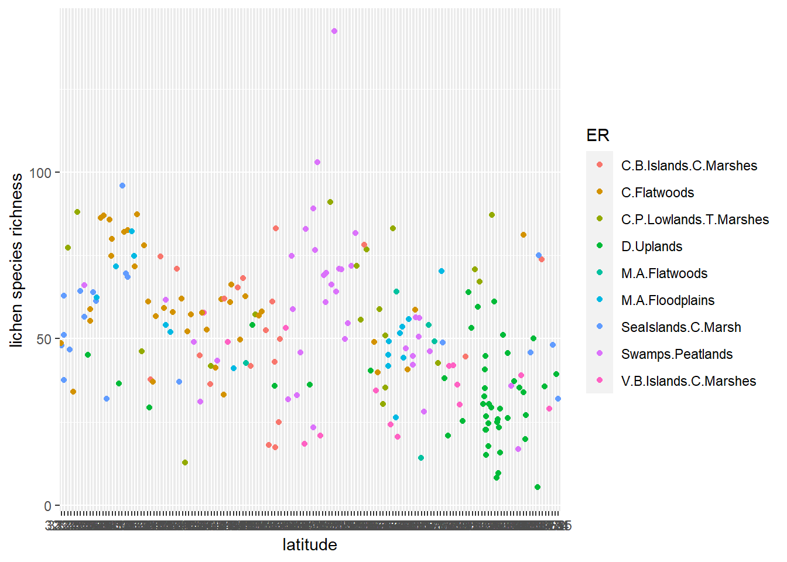
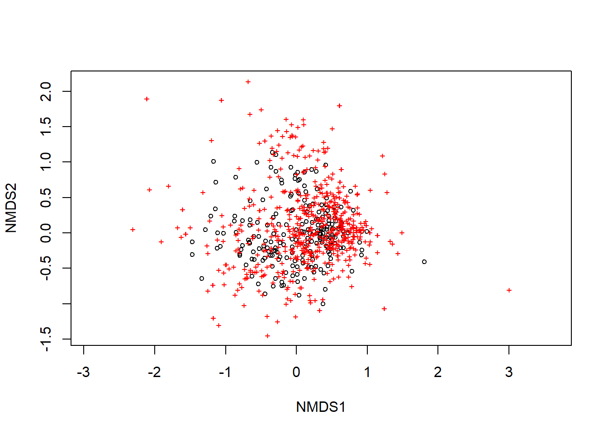
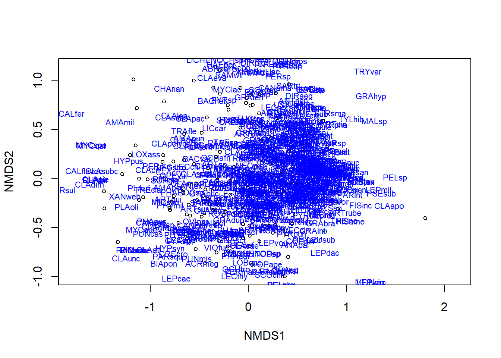

5 Part 3. Statistical Analysis
You will need to install and load package vegan.
5.1 Univariate Analysis
We will be doing a simple Generalized Linear Model (GLM). You could easily do an entire course on GLMs, so this is not even going to begin to scratch the surface of what there is to learn about this type of statistical analysis.
In the paper by McMullin et al. (2019), the authors examined which lichen sites and species might be most threatened by sea level rise. They did not look for other patterns of species distribution. Here we will test whether lichen richness follows the pattern predicted by the latitudinal species gradient that has been observed for other species.
Here is the code to create a GLM called lat_test (short for “latitude test”). We’re simply testing whether latitude (“Lat”) explains species richness with a linear function.
lat_test <- glm(sppRich ~ Lat, data = MACPall)To see the model output, type summary(lat_test).
It’s always important to check that your model doesn’t violate assumptions of normality. You can assess this by inspecting the ratio of the null deviance to residual deviance in the model summary.
You can do this by plotting the model fits. Do this with the code plot(lat_test). You will see plots of 1) residuals vs. fitted data; 2) a Q-Q plot; 3) Scale-location plot; 4) Residuals vs. Leverage.
Click the links here to read about how to interpret the Residuals vs Fitted plot; the Q-Q plot. If your model does not meet the assumptions of normality, you may need to use a different error structure (e.g., Poisson, logNormal). Going into the whys and hows of that is beyond the scope of this course. The Q-Q plot fit here for lat_test is slightly skewed but we’re going to accept it.
To make a scatterplot of the data with the line of best fit included, use the code below. Note the new function predict.glm which calls the model we built (lat-test) and builds a predictive line across the range of x-values in our plot. The code chunk below also demonstrates how to add customized x and y axis labels (third “layer” in the ggplot2 code). In the first line (geom_point function), there is a demonstration of how to colour code the points by one of the attributes in the data base (in this case ER for Ecoregion) AND how to use position=jitter to add some slight noise to the data that allows you to see more points by minimizing overlap between points. This makes your graph slightly less accurate on a very fine scale, but enables you to see broader scale patterns. Both of these can be very useful functions.
ggplot(data = MACPall) +
geom_point(mapping = aes(x = Lat, y = sppRich, colour = ER), position = "jitter") +
geom_line(mapping = aes(x = Lat, y = predict.glm(lat_test)), size = 1) +
labs(x = "latitude", y = "lichen species richness")
5.2 Multivariate Analysis
Multivariate analysis refers to statistical analyses of more than one variable at a time. Again, one could easily fill an entire course on the topic of multivariate statistics, so we’re only going to demonstrate what one kind of multivariate analysis looks like using R. We’re going to do a type of ordination, called a Non-metric multidimensional scaling (or NMDS). There are many types of ordination analysis out there - you may have heard of some of them, some of these are Principal Components Analysis (PCA), Canonical Components Analysis (CCA).
An ordination simply summarizes multivariate data and projects into a lower dimensional space - usually across two axes. It can be a useful way to see intrinsic patterns in complex data sets, or to simplify data before doing different analyses.
You will need to load the vegan package to do this analysis.
To do the NMDS ordination, we use the function metaMDS. We’ll apply it to the species data set. Recall that this is a dataset with 215 rows (one row per site) and 599 species. This is a fairly large data set. The ordination will allow us to see whether certain species are closer together in data space, and if this corresponds to some of the site-level attributes.
Before we do this, we need to manipulate the MACPspp data frame so that it only includes the species data. You could use a tool from the dplyr package, or since we know the sites are in the first column and there are 600 columns total in MACPspp we can use a simple baseR funcction:
spp <- MACPspp[,2:600]Here is the code to do the ordination of spp as well as plot it. The default in the plot settings is to use black circles for sites and red + signs for species.
ordination_spp <- metaMDS(spp)## Run 0 stress 0.2011619
## Run 1 stress 0.2011618
## ... New best solution
## ... Procrustes: rmse 0.0001526031 max resid 0.001597708
## ... Similar to previous best
## Run 2 stress 0.2140844
## Run 3 stress 0.2051861
## Run 4 stress 0.2027495
## Run 5 stress 0.2025941
## Run 6 stress 0.2015875
## ... Procrustes: rmse 0.01716666 max resid 0.2302712
## Run 7 stress 0.2066741
## Run 8 stress 0.205073
## Run 9 stress 0.2065044
## Run 10 stress 0.2033103
## Run 11 stress 0.2010589
## ... New best solution
## ... Procrustes: rmse 0.005617899 max resid 0.07903478
## Run 12 stress 0.2055039
## Run 13 stress 0.2080301
## Run 14 stress 0.2010597
## ... Procrustes: rmse 0.000268988 max resid 0.003849411
## ... Similar to previous best
## Run 15 stress 0.2011619
## ... Procrustes: rmse 0.005585886 max resid 0.07858387
## Run 16 stress 0.2447931
## Run 17 stress 0.2065044
## Run 18 stress 0.2064097
## Run 19 stress 0.2650103
## Run 20 stress 0.2120983
## *** Solution reachedplot(ordination_spp)
We can adjust this using the function display. Play around with the code below to see how you can change the plot.
plot(ordination_spp, display = "sites")
text(ordination_spp, display = "spec", cex = 0.7, col = "blue")
The text function adds the species names. There are so many that they become illegible. You could try adjusting the font size, or if this were your own data, you might apply 2-letter species codes, if possible.
Often we want to layer other information on an ordination to better see pattern. For example, we might want to add convex hulls around the site points that are from the same ecoregion. This will let us see whether some ecoregions have species that are unique to them (the hull will be isolated from other hulls) or if two or more ecoregions have similar species composition (the hulls will have a lot of overlap).
Before we do that, we need to strip the “sites” column from the MACPsites dataframe so we have just the environmental variables. We could use the baseR method we did above to create spp, or you could use the select function from the dplyr package.
env <- select(MACPsites, ER, VEG, PPT, TEMP, ELEV)Then specify to create convex hulls using the ecoregion field (ER) from env:
ordihull(ordination_spp, env$ER, col = 1:4, label = TRUE)
Try the above code, and then see if you can modify it to create convex hulls by vegetation type.
If you can’t see the hulls because the text labels are too big, change label = TRUE to label = FALSE and run the code again.
Another data visualization might be to use ellipses instead of convex hulls. You can try it with this code:
ordiellipse(ordination_spp, env$ER, col = 1:4, draw = "polygon")
Finally, we might want to do a test to see how different environmental variables at the sites load onto to the two axis of our ordination. This can start to tell us how what’s happening at the sites might be influencing the species pattern(s).
ord.fit <- envfit(ordination_spp ~ ELEV + PPT + TEMP, data = env, perm = 999)
To see the test output, type ord.fit
To plot the fits of elevation, temperature and precipitation on the ordination, use these to lines of code.
plot(ordination_spp)
plot(ord.fit, col = "black")
5.3 Your assignment for Part 3
Describe what you can conclude about the effect of latitude on species richness for the mid-Atlantic Coastal Plain. Is the fit significant? Are there issues with the data that might affect the inferences drawn from the statistical analysis?
What interpretation can you make from the final ordination plot we made here?
Think about a possible hypothesis that McMullin RT (2019) could have tested with these data, but did not.
- Write out the hypothesis in words and include a prediction
- Sketch a “toy graph” of how you expect the data to look if the hypothesis is supported
- Identify what kind of statistical test you will apply
- Describe how what steps you need to take with these data to execute the steps (i.e., do you need to do any data wrangling first?). A flow chart or bullet points would be a good way to do this.
- Execute the test. Include a copy of the code, the statistical output and a short interpretation of the hypothesis test.
For graduate students: Do the above step twice (i.e., test two different hypotheses). Challenge yourself to try a new test that you may not have done before.